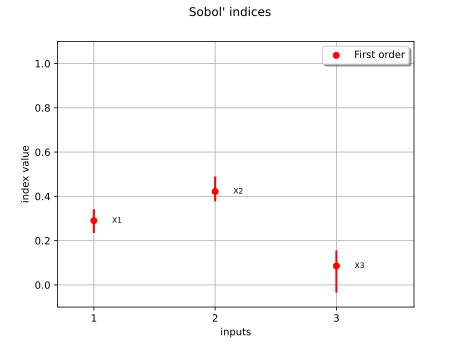
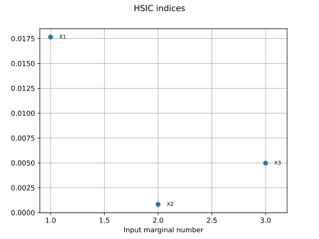

Sensitivity analysis¶

Sobol’ sensitivity indices using rank-based algorithm
Sobol' sensitivity indices using rank-based algorithm

Estimate Sobol’ indices for the beam by simulation algorithm
Estimate Sobol' indices for the beam by simulation algorithm


Estimate Sobol’ indices for a function with multivariate output
Estimate Sobol' indices for a function with multivariate output

Estimate Sobol' indices for the Ishigami function by a sampling method: a quick start guide to sensitivity analysis



The HSIC sensitivity indices: the Ishigami model
The HSIC sensitivity indices: the Ishigami model

Example of sensitivity analyses on the wing weight model
Example of sensitivity analyses on the wing weight model